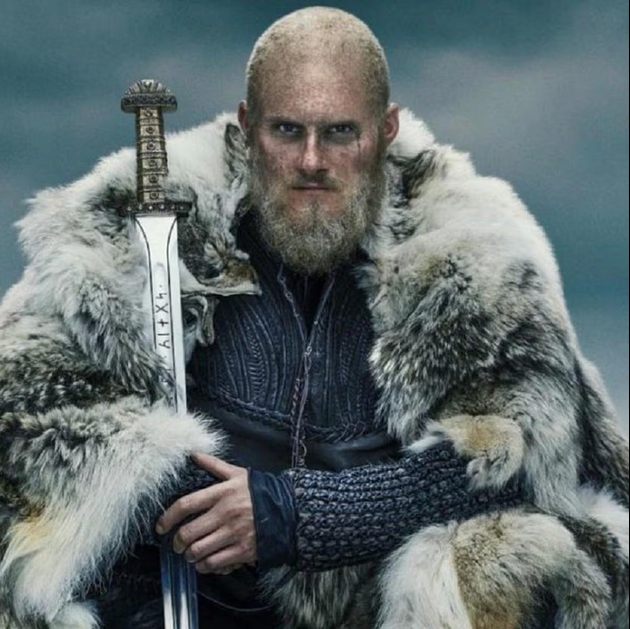

Bjorn Ragnarsson

Sobre mi
¡Saludos! Soy Björn, un guerrero vikingo forjado en las leyendas de mi padre, Ragnar Lodbrok, y mi madre, Lagertha. Mi espada y mi astucia han trazado un camino de gloria a través de mares tempestuosos y campos de batalla. Con honor y determinación, defiendo a mi pueblo y busco mi propio destino en esta vida de aventuras. ¡Que los dioses nos guíen en nuestro viaje!


Logros
- Unificación de Kattegat
- Negociación de Tratados de Paz
- Legado Familiar
- Defensa de Kattegat contra los Francos
Experiencia laboral
- Rey de Kattegat (Años 800-820): Lideré el reino de Kattegat con sabiduría y fuerza, expandiendo nuestras fronteras y fortaleciendo nuestra influencia en la región. Implementé políticas para el desarrollo económico y la seguridad del reino, asegurando la prosperidad de nuestro pueblo.
- Explorador y Conquistador (Años 780-790): Participé en numerosas expediciones marítimas, explorando territorios desconocidos y estableciendo colonias vikingas en nuevas tierras. Conquisté nuevos territorios, enfrentándome a desafíos tanto naturales como humanos con valentía y determinación.
- Comandante Militar (Años 790-800): Dirigí ejércitos vikingos en batallas épicas contra enemigos tanto extranjeros como locales, demostrando habilidades tácticas y estratégicas excepcionales. Entrené y lideré a guerreros en el campo de batalla, inspirando valor y determinación en mis tropas.
Educacion
- Formación en Estrategia Militar (Años 770-780): Estudié bajo la tutela de grandes líderes vikingos y estrategas militares, adquiriendo conocimientos en tácticas de combate, logística y liderazgo.
Habilidades
- Liderazgo: Capacidad para inspirar y motivar a otros, tomar decisiones difíciles y liderar en situaciones de alta presión.
- Combate: Dominio en el uso de diversas armas vikingas, incluyendo espadas, hachas y escudos, así como habilidades en combate cuerpo a cuerpo.
- Estrategia: Experiencia en la planificación y ejecución de campañas militares, así como en la exploración y colonización de nuevos territorios.
- Resolución de problemas: Habilidad para enfrentar y superar desafíos tanto en el campo de batalla como en la gestión de recursos y conflictos políticos.
Idiomas
- Nórdico Antiguo: Lengua materna. Poseo un dominio completo del nórdico antiguo, el idioma de nuestros ancestros vikingos.
- Inglés: Fluido. He adquirido fluidez en inglés a través de mis viajes y encuentros con diferentes culturas. Puedo comunicarme eficazmente tanto en situaciones cotidianas como profesionales.
- Latín: Intermedio. Tengo conocimientos intermedios de latín, lo que me permite comprender textos históricos y comunicarme en un nivel básico en este idioma.
Intereses
- Exploración: Apasionado por descubrir nuevos horizontes y desafiar lo desconocido.
- Cultura Vikinga: Interés en la historia, mitología y tradiciones de los pueblos nórdicos.
- Artes Marciales: Afición por el entrenamiento físico y el perfeccionamiento de habilidades de combate.